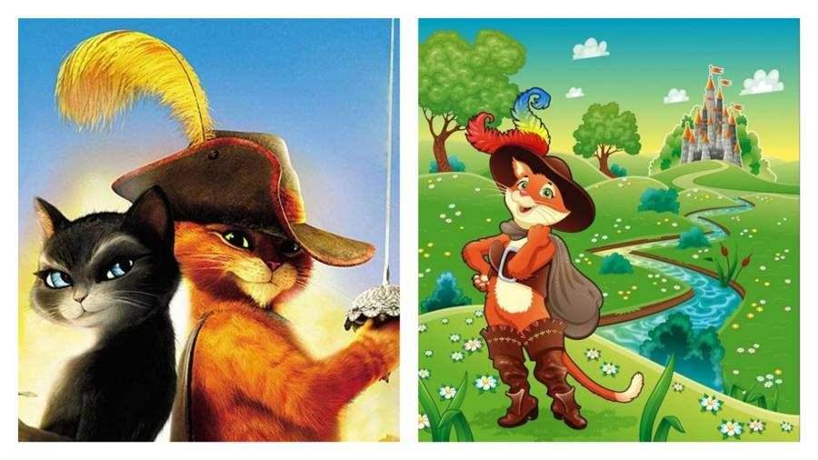

Imagens diversas
Resumo da história infantil - O Gato de Botas, assim como o nome já diz, é um felino que vive de roubos em Compostela, Espanha. A mulher que o adotou adorava cuidar das crianças abandonadas. Quando o Gato de Botas percebeu que o seu amigo ovinho já não era mais bondoso, decidiu alertá-lo. Porém, de nada adiantou. Em um certo momento, o ovinho planejava um atentado contra a cidade. Mas o gato o impediu e fez o seu amigo ir para a cadeia. Ele ficou anos sem nenhuma notícia do seu amigo. O gato desejava ter os feijões mágicos para poder dar uma vida melhor para sua mãe e seus irmãos. Foi aí que ficou sabendo que os feijões estavam em posse de Jack e Jill. Ele, então, passa a contar com a ajuda de Kitty Para-Mansa para pegar os feijões. O Gato de Botas e Kitty lutaram bastante para conseguir os feijões. No entanto, algo que o gato não sabia era que a gatinha agia sob as ordens de Humpty. No início o Gato de Botas não concordava em ajudar o ovinho. Mas acabou cedendo depois que Humpty garantiu que iria contribuir com a cidade. Ao longo da história, os três vivem muitas aventuras. No final, o Gato de Botas e Kitty de apaixonam um pelo outro e a mãe o perdoa por todos os seus erros.